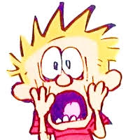
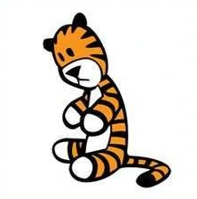
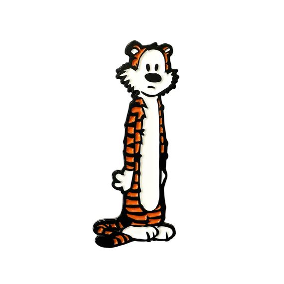
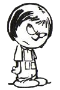
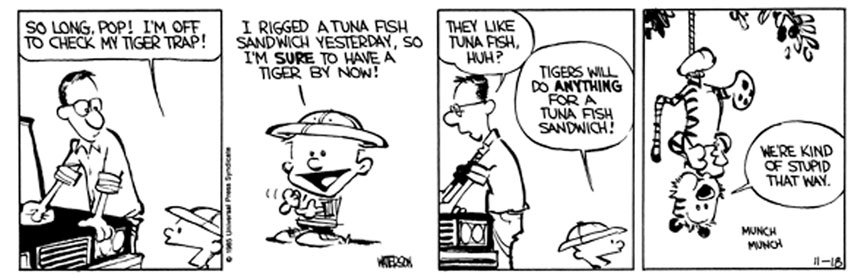

Meet the Cast

John Calvin:
John Calvin or better known as Calvin is the protagonist of this comic series. He is named after french theologian, John Calvin. He is six years old and his best friend is his stuff tiger Hobbes. Calvin even if young prefers his stuff animal rather than people. He is a troublemaker and stubborn, but yet imaginative and precocious. As a child, he questions what everyone sees to be the norm. A true out of the box thinker.


Hobbes:
To the outside world he has the appearance of a stuffed tiger, but to his best friend, Calvin he is a tiger whos is better much alive. Hobbes's name refers to the philosopher, Thomas Hobbes. Hobbes often participates in Calvin's wild rides of adventure, fantasy, and his daily school life. He is aware of the mischief that Calvin does and tries to keep Calvin from misbehaving. Hobbes dislikes humans and sees them as inferior with Calvin being the sole exception. Their relationship can be best described as a love and hate type.

Calvin's Parents:
Through the series, they remained nameless and are just referred to as "mom" and "dad". They help Calvin by answering life's deepest and philosophical questions and keeping his mischievous behavior in check. They often refer to "character building" for they wish for Calvin to be able to fit into society and not be ousted by society. Calvin's mom is a stay at home and is the one who has to deal with all of the schemes. Calvin's dad is a sensible working man and believes with hard work anything is possible, the opposite idealogy of their son Calvin.

Susie Derkins:
Susie is the same age as Calvin. She lives in the same block as Calvin and his family. She can be described as being the opposite of Calvin for she is a hardworking student who always does her schoolwork. Unlike Calvin, she is well mannered and respectful of others and always does as she is told. Whenever she interacts with Calvin and Hobbes she often ignores Calvin and instead makes remarks about his stuff tiger. She is often victim to all of Calvin's antics, pranks, and troublemaking.
